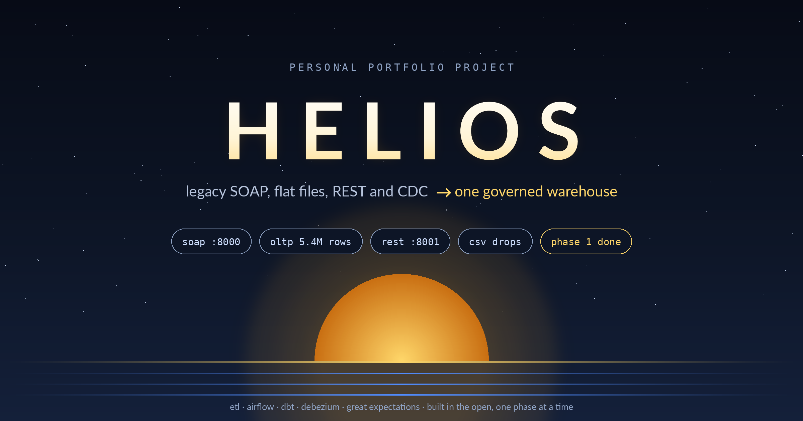
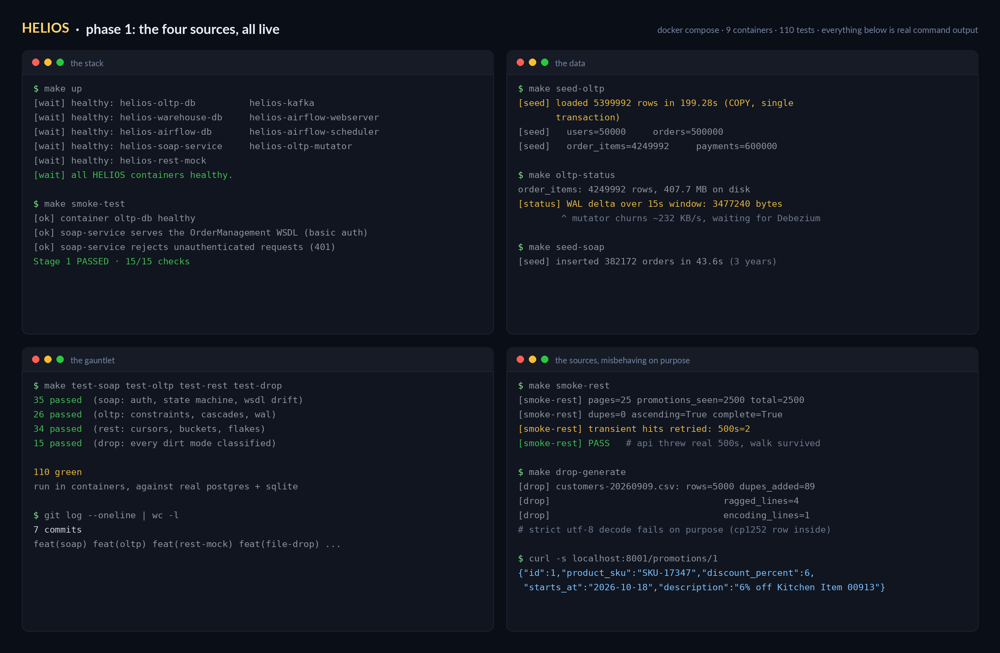

HELIOS modernizes four "legacy" sources - a SOAP OrderManagement service, nightly CSV drops, a flaky REST API and a busy OLTP database - into a governed dimensional warehouse, with Debezium CDC, Airflow, dbt, quality gates and lineage still to come. Personal portfolio project: every number below is reproducible with a make target.

| metric | value |
|---|---|
| tests | 110 green across 4 suites, run in containers |
| oltp data | 5,399,992 rows / ~558 MB, single-transaction load |
| WAL churn | 3.48 MB per 15s (~232 KB/s) for Debezium to consume |
| smoke gate | stage 1: 15/15 checks, 9 containers healthy |
| ADRs | 4 (soap contract, oltp seeder, rest-mock, file-drop) |
| build time | 6h26m across two sittings |
git clone https://github.com/xenoaitham/helios.git cd helios make up # 9 containers, wait-gated on health make smoke-test # stage 1: 15/15 (stage 2 fails loudly by design until phase 3) make oltp-status # row counts + live WAL churn measurement make smoke-rest # full pagination walk, retrying real 429s/500s
the repo · devlog #1 · evidence logs · ADRs · runbook